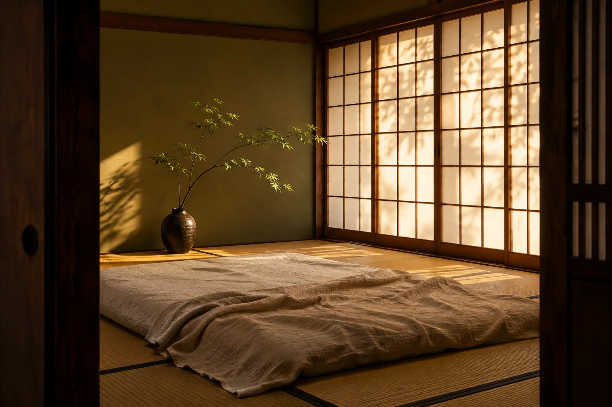

Ashiatsu barefoot massage
Room to
exhale.
For the days you carry in your shoulders. Massage and bodywork with Betty.
Explore barefoot massage
Meet your therapist
Meet Betty.
Betty brings a background in therapeutic Swedish massage and an interest in how muscles work together to her one-person practice at Aftermath. At Massage Rehab in Fowlerville, her work included both Ashiatsu and prenatal massage. She likes to combine techniques, choosing the pressure and pace around the person on her table.
In Swedish massage, Betty works with her hands in long, gliding strokes. In Ashiatsu, the broad surface of her foot lets her apply steady pressure. Knowing how those touches differ is part of her craft. Knowing which one feels right starts with you.
You might want extra time on the shoulder that bothers you at your desk, or you might want a quiet hour from head to toe. Tell Betty in your own words. She’ll talk through the options with you before the session starts.
Explore the massage guideMassage guide
What the
techniques feel like.
Use this guide to put words to the kinds of touch you enjoy. Ask Betty which techniques are available for your visit.
Hands and feet
- Swedish massage
- Long, gliding strokes and gentle kneading give the session an even rhythm.
- Ashiatsu
- Betty uses overhead bars for balance and works with the soles of her feet. See Betty’s footwork.
- Reflexology
- Small, deliberate presses focus on areas of the feet or hands.
Focused pressure and stretching
- Myofascial release
- A slow stretch or sustained hold gives one area time and attention.
- Neuromuscular or trigger-point work
- The therapist holds pressure on a specific tender spot and adjusts it with your feedback.
- Sports massage
- Massage and stretching focus on the muscles you use in a particular activity.
Gentler approaches
- Craniosacral work
- Light, still contact around the head, spine, or pelvis.
- Energy balancing
- A quiet practice that may use light touch or hands held just above the body.
Tools, warmth, and scent
- Dry or fascial release cupping
- Cups create suction at the skin, producing a lifting sensation.
- Kinesiology taping
- Flexible sports tape is applied to the skin and moves with you.
- Hot stones and aromatherapy
- Smooth, warmed stones bring heat to the massage. Aromatherapy adds scent through essential oils.
- Topical CBD
- A CBD-infused lotion or oil can be used as the massage lubricant. Ask about ingredients if you have a product preference.
Massage at different stages of life
- Prenatal massage
- Positioning and support are adapted for comfort during pregnancy, often with pillows for side-lying.
- Postnatal massage
- After birth, the therapist adjusts positioning, pressure, and areas of focus around what feels comfortable that day.
- Massage for older adults
- The pace, pressure, and support can be adapted so getting settled and changing position feel manageable.
Before you arrive
Your first visit
What are the overhead bars for?
They support Betty as she works. She can take weight into her arms and ease the pressure of her foot without breaking contact.
Can I ask for lighter pressure?
Yes. You can ask Betty to ease up, pause, or skip an area at any point. “A little lighter, please” is all you need to say.
What should I tell Betty beforehand?
Start with what brought you in. Mention any areas you’d like extra time on or left alone, and anything that affects how comfortably you can sit or lie down.